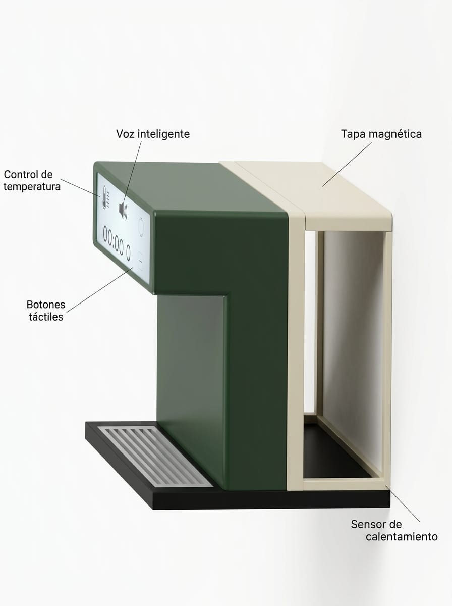
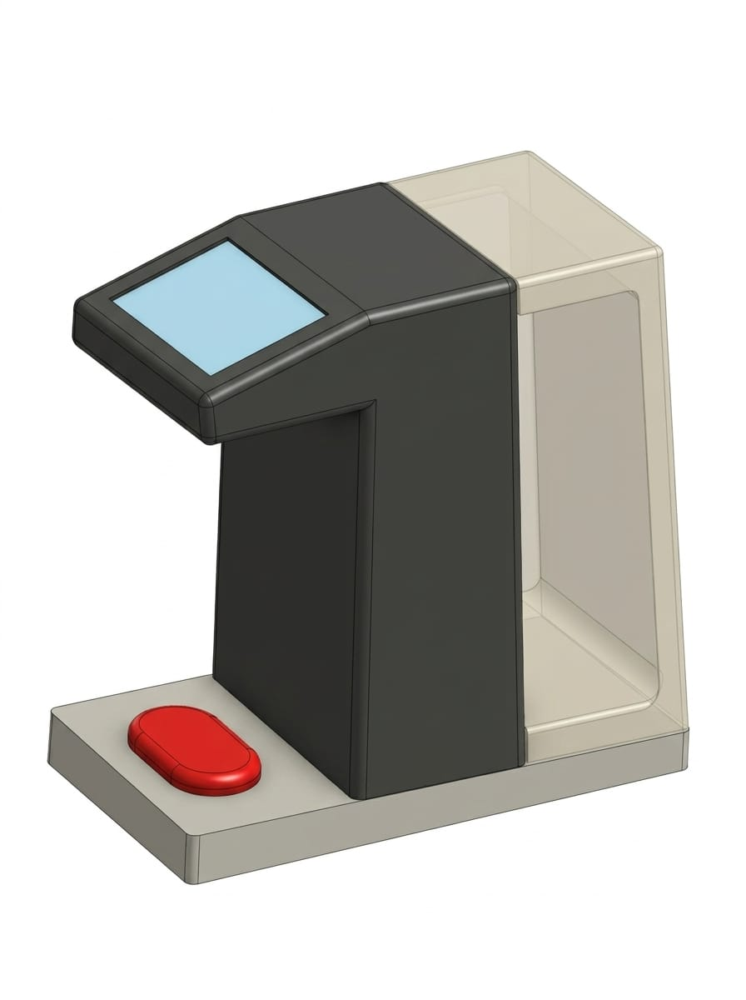
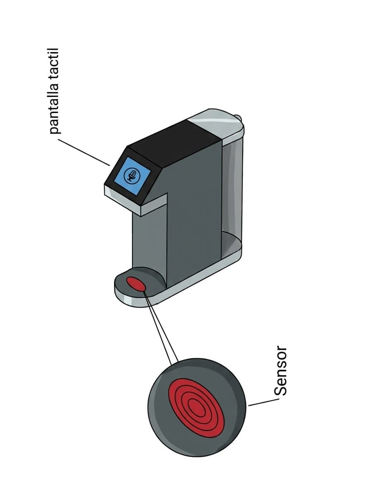
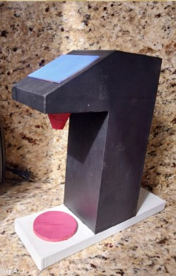
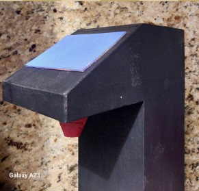
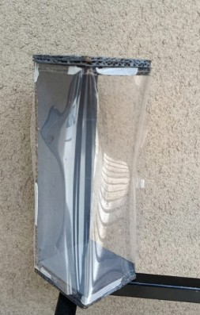
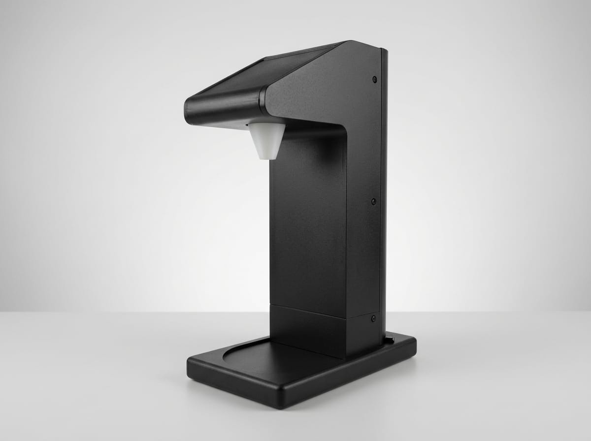
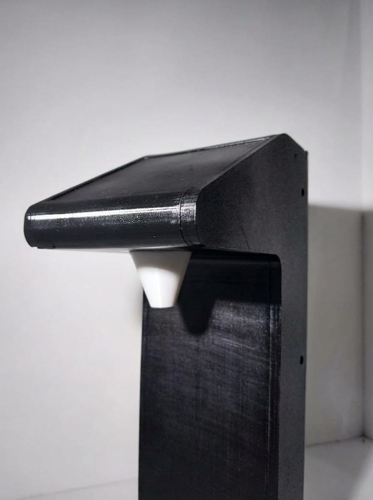
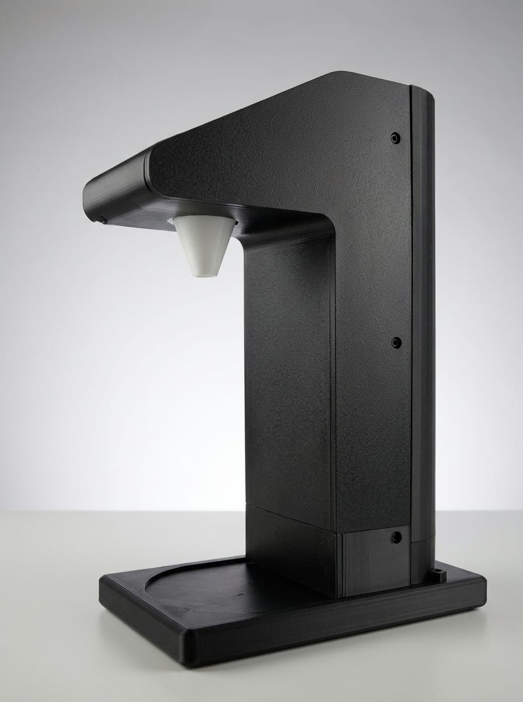

Evolución Visual
Galería del Proyecto
Explora los bocetos, prototipos y la versión final de la propuesta.
1. Bocetos y Conceptualización



Exploración gráfica inicial enfocada en resolver problemas de agarre y accesibilidad.
2. Prototipado y Pruebas



Maquetas y modelos a escala para probar la interacción física con usuarios reales.
3. Versión Final del Prototipo



Fotografías del modelo físico funcional del sistema doméstico inteligente.